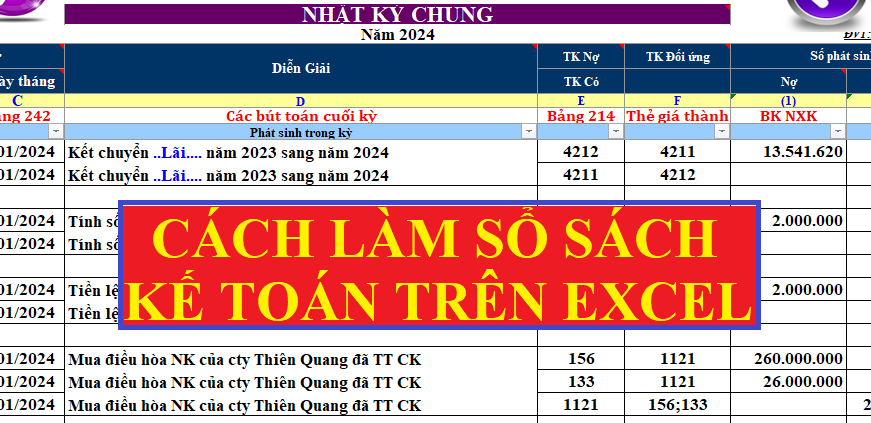
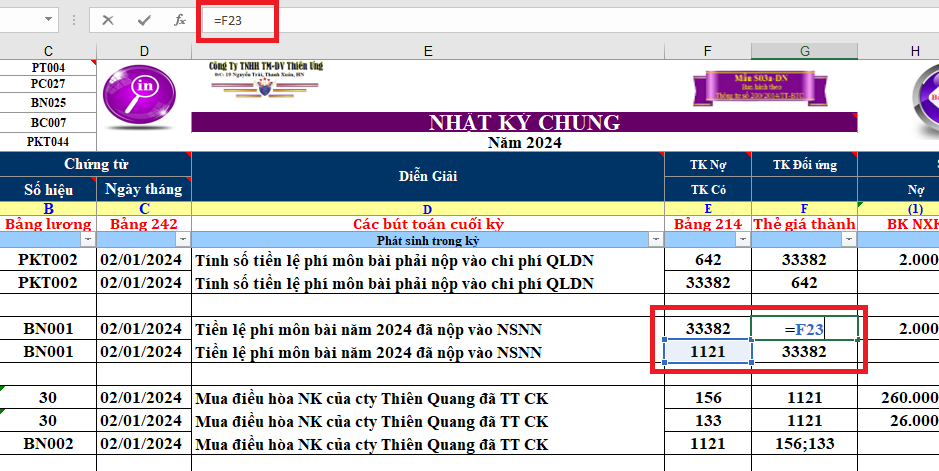
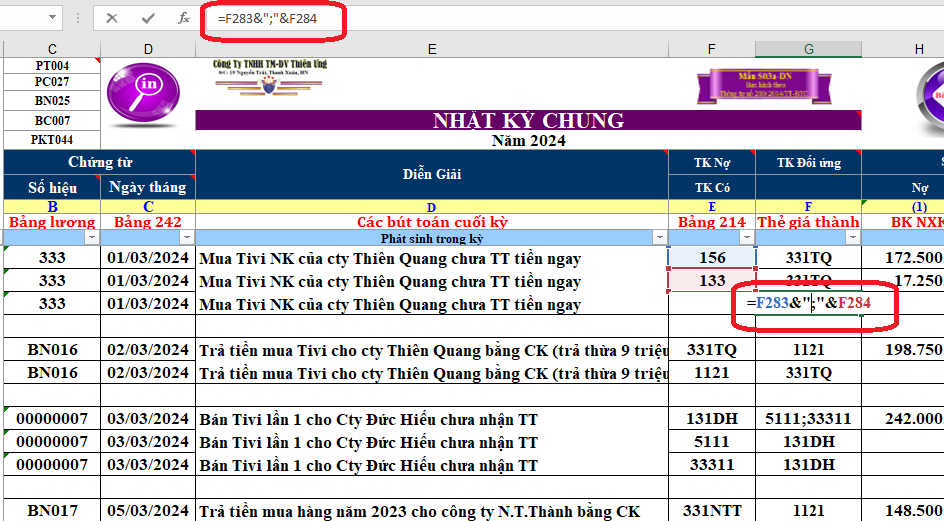

Hướng dẫn cách lập sổ sách kế toán bằng Excel thực hành trên Mẫu sổ sách kế toán trên Excel chi tiết từ việc sử dụng các hàm Excel để tính toán, tổng hợp, kết chuyển, lên sổ, lên báo cáo tài chính trên Excel mà không cần dùng đến phần mềm kế toán.
Chú ý: Đây là hướng dẫn cách làm sổ sách trên Excel theo Mẫu sổ sách kế toán trên Excel do Kế toán Diệu Tâm thiết kế. Các bạn có thể tải miễn phí về tại đây: Mẫu sổ sách kế toán trên Excel
Cách làm sổ sách kế toán trên Excel cụ thể như sau:
I. TÌM HIỂU CÁC HÀM THƯỜNG DÙNG TRÊN EXCEL KẾ TOÁN
- Trước tiên để làm được Sổ sách kế toán trên Excel các bạn cần biết cách sử dụng 1 số hàm Excel thường dùng trong kế toán như: VLOOKUP, SUMIF, SUBTOTAL, IF…
Chi tiết xem tại đây: Các hàm thường dùng trong Excel kế toán
II. CÁC CÔNG VIỆC ĐẦU NĂM TÀI CHÍNH
Chuyển số dư cuối năm trước sang đầu năm nay (Đối với DN đang hoạt động):
- Vào số dư dầu kỳ các Sổ chi tiết tài khoản 242, 211, 131, Bảng tổng hợp Nhập Xuất Tồn, và các Sổ khác (nếu có)
- Kết Chuyển lãi (lỗ) từ năm trước sang (Căn cứ vào số dư đầu kỳ TK 4212 trên Bảng CĐTK để chuyển). Việc thực hiện này được định khoản trên Nhật ký chung và chỉ thực hiện 1 lần trong năm, vào thời điểm đầu năm.
VD: Kết chuyển lãi từ năm trước sang năm nay:

Xem thêm: Công việc kế toán cần làm đầu năm
III. Cách nhập liệu các nghiệp vụ vào Sổ sách Excel kế toán:
1, Hướng dẫn nhập liệu trên Sổ Nhật ký Chung:
- Cột ngày tháng ghi sổ: Ngày tháng ghi sổ bằng hoặc sau ngày chứng từ.
- Cột số hiệu: Là số hiệu của Hoá đơn, của Phiếu Thu, Phiếu chi, Giấy báo nợ, GIấy báo có…
- Cột ngày chứng từ: Là ngày thực tế trên chứng từ
- Cột Diễn Giải: Là nội dung tóm tắt nhưng đầy đủ thông tin của một chứng từ
- Cột TK Nợ/Có: Là Cột định khoản Nợ/Có cho các nghiệp vụ phát sinh.
- Cột TK đối ứng: Theo dõi TK đối ứng cho những TK đã định khoản bên cột TK Nợ/Có.
Cách nhập: (Đặt đấu bằng (=) vào ô tương ứng với TK cần lấy đối ứng sau đó bấn vào Tk đối ứng và bấm Enter)
Công thức: = Bấm vào TK đối ứng thứ nhất &”;”& Bấm vào TK đối ứng thứ 2. ( Nếu có nhiều TK đối ứng thì làm tương tự)
- Cột Số phát sinh: Là số tiền theo trên hóa đơn, chứng từ ...
-> Khi có phát sinh các nghiệp vụ kinh tế các bạn phải hạch toán hết vào SỔ NHẬT KÝ CHUNG, sau đó mới đến các sổ chi tiết liên quan với nó.
Ví dụ: Hạch toán chi phí thuế môn bài đầu năm:
- Cột TK đối ứng: = vào ô tương ứng với TK cần lấy đối ứng sau đó bấn vào Tk đối ứng và bấm Enter)

VD: Hạch toán khi mua hàng nhập kho:
- Cột TK đối ứng: = Bấm vào TK đối ứng thứ nhất &”;”& Bấm vào TK đối ứng thứ 2.

Các nghiệp vụ không liên quan đến Thu, Chi, Nhập, Xuất:
- Với các nghiệp vụ này bạn không phải nhập liệu vào các cột: Số phiếu Thu/Chi/Nhập/Xuất, cột số lượng Nhập và số lượng Xuất (DKT, GBN, GBC).
Chú ý:
TRONG QUÁ TRÌNH LÀM VIỆC PHẢI CÓ SỰ ĐỒNG NHẤT VỀ TÀI KHOẢN VÀ ĐỒNG NHẤT VỀ MÃ HÀNG HOÁ
2. Các nghiệp vụ liên quan đến Phải thu, Phải trả (131, 331):
a/ Nếu phát sinh thêm Khách hàng hoặc nhà cung cấp mới – Thì phải khai báo chi tiết đối tượng KH hoặc NCC mới bên bảng Danh mục tài khoản và đặt mã Tài khoản ( Mã khách hàng) cho KH/NCC đó, đồng thời định khoản chi tiết bên NKC theo mã TK mới khai báo.
VD: Phải thu của Công ty Cổ phần ứng dụng Quốc Tế ( là khách hàng mơi ).
Bước 1: Sang DMTK khai chi tiết khách hàng – Công ty cổ phần ứng dụng QUỐC Tế với mã Khách hàng là: 1311 hoặc 131QT ( Khai báo phía dưới Tk 131 ) ( Việc khai báo mã TK như thế nào là tuỳ vào yêu cầu quản trị của bạn )
Bước 2: Hạch toán bên NKC theo mã TK ( Mã KH ) đã khai báo cho Công ty Cổ phần ứng dụng Quốc tế là 1311 hoặc 131QT
b/ Nếu không phát sinh Khách hàng mới thì khi gặp các nghiệp vụ liên quan đến TK 131 và TK 331, ta quay lại Danh mục TK để lấy Mã Khách hàng đã có và định khoản trên NKC.
3/ Trường hợp phát sinh mới Công cụ dụng cụ hoặc TSCĐ ( tức liên quan đến TK 242, 214 )
- Sau khi định khoản trên NKC phải sang bảng phân bổ 242, 214 để khai báo thêm công cụ dụng cụ hoặc tài sản này vào bảng và tính ra số cần phân bổ trong kỳ hoặc số cần trích khấu hao trong kỳ.
4/ Trường hợp mua hoặc bán hàng hoá:
a/ Trường hợp mua hàng hoá:
Bước 1: Bên Nhật ký chung không phải khai chi tiết từng mặt hàng mua vào, chỉ hạch toán chung vào TK 156 tổng số tiền ở dòng "Cồng tiền hàng" trên hoá đơn mua vào.
Bước 2: Đồng thời về Phiếu nhập kho, khia báo chi tiết từng mặt hàng mua theo hoá đơn vào phiếu nhập kho:
- Nếu mặt hàng mua vào đã có tên trong Danh mục hàng háo thì quay về DM hàng hoá để lấy Mã hàng, tên hàng cho hàng hoá đó và thực hiện kê nhập.
- Nếu mặt hàng mùa vào là hàng mới thì phải đặt Mã hàng cho từng mặt hàng trên DMHH sau đó thực hiện kê nhập trên PNK theo mã hàng đã khai báo.
Bước 3: Nếu phát sinh chi phí (vận chuyển, bốc dỡ, lưu kho…) cho việc mua hàng thì Đơn giá nhập kho là đơn giá đã bao gồm chi phí. Khi đó phải phân bổ chi phí mau hàng cho từng mặt hàng như sau: (Có thể lập bảng tính riêng cho việc phân bổ chi phí).
| Chi phí của mặt hàng A | = | Tổng chi chí | X | Số lượng (hoặc thành tiền) của mặt hàng A |
| Tổng số lương (hoặc tổng thành tiền của lô hàng |
| Chi phí đơn vị mặt hàng A | = | Tổng chi chí của mặt hàng A |
| Tổng số lương của mặt hàng A |
| Đơn giá nhập kho mặt hàng A | Đơn giá của mặt hàng A | + | Chi phí đơn vị của mặt hàng A |
b/ Trường hợp bán hàng hoá:
Bước 1: Bên Nhật ký chung không phỉa khai chi iết từng mặt hàng bán ra, chỉ hạch toán chung vào TK 5111 tổng số tiền ở dòng” Cộng tiền hàng “ trên hoá đơn bán ra.
Bước 2: Đồng thời về Phiếu Xuất kho, khai báo chi tiết từng mặt hàng bán ra theo Hoá đơn vào Phiếu XK.
- Để lấy được Mã hàng xuất kho, ta quay về Danh mục hàng hoá để lấy.
- Nếu Công ty áp dụng phương pháp tính giá xuất kho là “Bình quân cuối kỳ" thì: Không hạch toán bút toán Giá vốn hàng bán. Nên cuối tháng mới thực hiện bút toán này để tập hợp giá vốn hàng bán trong kỳ.
- Nếu Công ty áp dụng phương pháp tính giá xuất kho là "Bình quân đầu kỳ" thì Hạch toán bút toán giá vốn: bạn ghi Nợ TK 632/ghi Có chi tiết cho từng mã hàng kê số lượng xuất, không kê tiền. Nên cuối kỳ khi tính được giá vốn ở “Nhập xuất tồn kho” thì mới dùng công thức VLOOKUP để tìm số tiền tương ứng cho từng nghiệp vụ)
Chú ý:
- Khi vào bảng kê xuất kho thì chỉ vào số lượng, chưa có đơn gá xuất kho vì đơn giá cuối kỳ mới tính được bên Bảng Nhập Xuất TỒn kho
- Khi tính được Đơn giá bên bảng Nhập – Xuất – Tồn thì sử dụng hàm VLOOKUP tìm đơn giá xuất kho từ bảng Nhập – Xuất – Tồn về PXK
c, Lập phiếu Nhập kho, Xuất kho:
- Vào phiếu Nhập kho ( theo hướng dẫn tại mục 4a ở trên )
- Vào phiếu Xuất kho ( theo hướng dẫn tại mục 4b ở trên )
IV. CÁC BÚT TOÁN KẾT CHUYỂN CUỐI THÁNG
Chú ý: Phần hạch toán kết chuyển này, chi tiết cách Hạch toán và cách Tính các bạn xem tại đây nhé: Hạch toán các bút toán kết chuyển cuối kỳ, còn dưới đây là phần hướng dẫn sử dụng các hàm Excel để tổng hợp.
- Hạch toán các bút toán về tiền lương cuối tháng (căn cứ vào bảng lương)
- Trích khấu hao tài sản cố định (số liệu từ bảng khấu hao TSCĐ)
- Phân bổ chi phí trả trả (nếu có) (từ bảng số liệu từ bảng PB 242)
- Kết chuyển thuế GTGT
Ta đặt:
- Tổng TK 133 = Số dư Nợ đầu kỳ (nếu có) + Tổng phát sinh Nợ 133 - Tổng phát sinh Có 133
- Tổng TK 3331 = Tổng Phát sinh Có 3331 – Tổng Phát sinh Nợ 3331
Trường hợp 1:
|
(Số dư Nợ đầu kỳ 1331 + Tổng PS Nợ 1331) - Tổng PS Có 1331 |
> | Tổng PS Có 3331 - Tổng PS Nợ 3331 |
| => Nợ TK 3331 |
= Số nhỏ = Tổng PS Có 3331 - Tổng PS Nợ 3331 -> Còn được khấu trừ chuyển kỳ sau. |
| Có TK 1331 |
(Bút toán và công thức tính ra số thuế của TK 3331):
Nợ TK 3331 = Sumif Có TK 3331 – Sumif Nợ TK 3331
Có TK 1331 =
Trường hợp 2:
|
(Số dư Nợ đầu kỳ 1331 + Tổng PS Nợ 1331) - Tổng PS Có 1331 |
< | Tổng PS Có 3331 - Tổng PS Nợ 3331 |
| Nợ TK 3331 |
= Số đầu kỳ 1331 + Tổng PS Nợ - Tổng PS Có 1331 -> Phải nộp tiền thuế GTGT. |
| Có TK 1331 |
Bút toán thực hiện trong trường hợp này :
Nợ TK 3331 = Sumif Nợ 1331 – Sumif Có 1331 + Dư ĐK TK 1331
Có TK 1331 =
- Tìm giá vốn cho các nghiệp vụ ghi nhận giá vốn trên NKC mỗi khi bạn bán hàng
(Chú ý: Khi hạch toán đến bút toán này. Kế toán phải tổng hợp được bảng “Nhật xuất tồn kho” cuối kỳ và tìm được được đơn giá xuất kho về Phiếu xuất kho).
Nợ TK 632
Có TK 156 = Dòng tổng cộng của Cột thành tiền giá vốn xuất kho trên PXK.
- Kết chuyển giá vốn hàng xuất bán trong kỳ
Nợ TK 911
Có TK 632 = Sumif Nợ TK 632 – Sumif Có TK 632
- Kết chuyển các khoản giảm trừ doanh thu ( nếu có):
Nợ TK 5111
Có TK 521 = Sumif Nợ TK 521
- Kết chuyển doanh thu thuần trong kỳ
Nợ TK 5111
Có TK 911 = Sumif Có TK 5111 – Sumif Nợ TK 5111
- Kết chuyển Doanh thu hoạt động tài chính (nếu có) trong kỳ
Nợ TK 515
Có TK 911 = Sumif Có TK 515
- Kết chuyển chi phí hoạt động tài chính (nếu có) trong kỳ
Nợ TK 911
Có TK 635 = Sumif Nợ TK 635
- Kết chuyển chi phí bán hàng, quản lý trong kỳ:
Nợ TK 911
Có TK 6421 = Sumif Nợ TK 6421 – Sumif Có TK 6421
Nợ TK 911
Có TK 6422 = Sumif Nợ TK 6422 – Sumif Có TK 6422
- Kết chuyển thu nhập khác (nếu có) trong kỳ:
Nợ TK 711
Có TK 911 = Sumif Có TK 711
- Kết chuyển chi phí khác (nếu có) trong kỳ:
Nợ TK 911
Có TK 811 = Sumif Nợ TK 811
- Tạm tính thuế TNDN phải nộp trong quý (nếu quý đó có lãi)
Nợ TK 821
Có TK 3334 = (Sumif Có TK 911 – Sumif Nợ TK 911) x % thuế suất.
- Kết chuyển chi phí thuế TNDN (nếu có) trong kỳ (Chỉ thực hiện ở cuối năm tài chính)
Nợ TK 911
Có TK 821 = Sumif Nợ TK 821
- Kết chuyển lãi (lỗ) trong kỳ:
- Nếu lãi:
Nợ TK 911
Có TK 4212 = Sumif Có TK 911 – Sumif Nợ TK 911
- Nếu lỗ:
Nợ TK 4212
Có TK 911 = - (Sumif Có TK 911 – Sumif Nợ TK 911)
V. HƯỚNG DẪN LÊN CÁC BẢNG BIỂU THÁNG:
1. Lập bảng tổng hợp Nhập – Xuất – Tồn kho:
- Cột Số lượng và Thành tiền nhập trong kỳ, dùng hàm SUMIF tập hợp từ Phiếu nhập kho về
- Cột Số lượng Xuất trong kỳ, dùng hàm SUMIF tập hợp từ Phiếu xuất kho về
- Cột Đơn giá xuất kho, tính theo công thức tính đơn giá bình quân cuối ký
- Để có được bảng NXT của cá tháng sau, bạn Coppy bảng NXT của tháng trước và dán ( Paste ) xuống phía dưới, xoá trắng toàn bộ số liệu, đặt lại công thức cho các cọt tương ứng.
- Cột Mã hàng hoá, Tên hàng hoá, Đơn vị tính: Dùng hàm VLOOKUP tìm từ số dư cuối tháng trước xuống.
- Các cột khác tính như hướng dẫn ở phần trên.
2. Lập bảng Phân bổ Chi phí trả trước ngắn hạn, dài hạn, khấu hao TSCĐ.
- Để có được các bảng trên của các tháng sau, ta Coppy các bảng đó của tháng trước và dán (Paste) xuống phía dưới, xoá số liệu ở cột “Số khấu hao (phân bổ) lũy kế kỳ trước “và đặt hàm VLOOKUP cho cột này để tìm về giá trị tương ứng từ tháng trước.
- Hoặc căn cứ vào Số tháng đã phân bổ và mức phân bổ 1 tháng để tính.
- Khi phát sinh TSCĐ mới hoặc CCDC mới ta phải khai báo thêm TSCĐ hoặc CCDC đó tại các bảng tương ứng.
VI. HƯỚNG DẪN LẬP CÁC SỔ CUỐI KỲ:
1. Lập bảng Tổng hợp phải thu khách hàng - TK 131:
- Cột Mã KH và Tên KH, sử dụng hàm IF kết hợp với hàm LEFT tìm ở DMTK về
- Cột mã khách hàng:
= IF(LEFT(DMTK!A14,3)=”131”,DMTK!A14,””)
(địa chỉ ô A 14 là TK chi tiết đầu tiên của TK 131) . Hoặc dùng VLOOKUP tìm DMTK về.
- Cột tên khách hàng;
= IF(A11=””,””,VLOOKUP(A11,DMTK!$A$14:$E$150,2,0))
- Dư Nợ và Dư có đầu kỳ: Dùng hàm VLOOKUP tìm ở CĐPS tháng về.
- Cột Dư NỢ đầu kỳ:
= VLOOKUP($A11,’CDSPS-thang’!$A$9:$H$150,3,0)
- Cột Dư Có đầu kỳ:
= VLOOKUP($A11,’CDSPS-thang’!$A$9:$H$150,4,0)
- Cột số phát sinh Nợ và phát sinh Có, sử dụng hàm SUMIF tập hợp từ NKC về.
- Cột số phát sinh Nợ:
= SUMIF(NKC!$E$13:$E$607.’So cong no TK 131’!$A11,NKC!$G$13:$G$607)
- Cột số phát sinh Có:
= SUMIF(NKC!$E$13:$E$607,’So cong no TK 131’$A11,NKC!$H$13:$H$607)
- Cột dư Nợ và dư Có cuối kỳ, dùng hàm Max
- Cột dư Nợ cuối kỳ:
= MAX ( C11+E11-D11-F11,0)
- Cột dư Có cuối kỳ:
= MAX( D11+F11–C11-E11,0)
2, Lập Bảng tổng hợp Phải trả khách hàng – 331
Cách làm tương tự như bảng tổng hợp TK 131
3. Lập sổ quỹ tiền mặt và sổ tiền gửi ngân hàng;
(Riêng sổ quỹ tiền mặt và sổ Tiền gửi ngân hàng chúng ta không thể chuyển sổ trên NKC mà phải tính riêng 2 sổ này, vì 2 loại sổ này có mẫu sổ khác so với các sổ chi tiết TK, sổ tổng hợp TK khác)
a. Cách lập sổ Quỹ tiền mặt: ( Dữ liệu lấy từ sổ Nhật Ký Chung)
Cách lập công thức cho từng cột như sau: Trên sổ quỹ tiền TM, xây dựng thêm 3 ô: Tháng báo cáo; Tài khoản báo cáo ( là TK 1111); Nối tháng và TK cáo cáo.
- Ô nối tháng và TK báo cáo
= K6&”;”&L6 ( dùng tính số dư dầu kỳ theo từng tháng)
- Cột ngày tháng:
= IF($L$6=NKC!$E13,NKC!A13,””) ( L6: ô TK báo cáo)
- Cột Diễn giải:
= IF($L$6=NKC!$E13,NKC!D13,””)
- Cột Tài khoản đối ứng:
= IF($L$6=NKC!$E13,NKC!F13,””)
- Cột thu: = IF($L$6=NKC!$E13,NKC!G13,””)
- Cột Chi: = IF($L$6=NKC!$E13,NKC!H13,””)
- Cột số phiếu thu:
= IF(H11<=0,””,COUNTIF(H$11:H11,”>”)) ( H: cột tiền thu)
- Cột số phiếu chi:
= IF(I11<=0,””,COUNTIF(I$11:I11,”>”)) ( I: Cột tiền chi)
- Dòng số dư dầu kỳ dùng hàm SUMIF lấy trên bảng CDPS chi tiết của từng tháng.
Để tính được số dư đầu kỳ của từng tháng trên Sổ quỹ TM thì ta phải xây dựng bên phải bảng “ Cân đối phát sinh tháng” của các tháng thêm 2 cột:
- Cột BC: Gõ số tháng tại dòng tương ứng với TK 111 của Bảng CĐPS và coppy cho những dòng tiếp theo của tháng đó ( làm cho tất cả các tháng).
- Cột “ Nối tháng và TK báo cáo” :
=I9&”;”&A9 ( Là dãy điều kiện cho hàm SUMIF)
Sau đó dùng hàm SUMIF để tính ra số dư đầu kỳ trên sổ Quỹ TM;
= SUMIF(‘CDPS-thang’!$J$9:$J$450,’So quy’!$M$6,’CDPS-thang’!$C$9:$C$450)
- Cột tồn tiền cuối ngày dùng hàm Subtotal:
Cú pháp hàm:
= $J$9+Subtotal(9,H$11:H11)-Subtotal(9,I$11:I11)
- Dòng cộng số phát sinh : Dùng hàm subtotal
- Dòng số dư cuối kỳ: Dùng công thức đơn giản như sau
Dư cuối kỳ = Tồn đầu kỳ + TỔng thu – TỔng chi.
b. Lập sổ tiền gửi ngân hàng:
- Cách làm tương tự như sổ quỹ tiền mặt. Nhưng cột số hiệu và Ngày tháng chứng từ thì công thức tương tự như cột Ngày tháng ghi sổ.
VII. HƯỚNG DẪN LẬP BÁO CÁO TÀI CHÍNH
Chú ý: Đây là hướng dẫn lập BCTC trên Mẫu số sách kế toán trên Excel do Kế toán Diệu Tâm thiết kế theo QĐ 48.
a. Bảng cân đối kế toán
(Để bảng cân đối kế toán đúng thì Tổng Tài Sản phải bằng tổng Nguồn Vốn )
Cách làm:
- Cột số năm trước: Căn cứ vào Cột năm nay của "Bảng Cân Đối Kế toán" Năm trước.
- Cột số năm nay: Chuyển số liệu của các TK từ loại 1 đến loại 4 ( phần số dư cuối kỳ ) trên bảng CĐPS năm và ghép vào từng chỉ tiêu tương ứng trên Bảng CĐKT.
Ví dụ : Chỉ tiêu [110]- "Tiền và các khoản tương đương tiền" bằng (=) Số dư Nợ cuối kỳ của các tài khoản 111 + TK 112 + TK 121 (đối với các khoản đầu tư ngắn hạn có thời hạn dưới 3 tháng ).
- Riêng đối với các chỉ têu liên quan đến khách hàng và nhà cung cấp (người bán) thì căn cứ vào Bảng Tổng Hợp TK 131, 331.
b..Bảng báo cáo kết quả kinh doanh ( Bảng này lập cho thời kỳ- là tập hợp kết quả kinh doanh của một kỳ, thời kỳ ở đây có thể là tháng, quý Năm tuỳ theo mục đích quản trị của Doanh Nghiệp và là năm đối với cơ quan thuế )
Cách làm:
- Cột số năm trước: Căn cứ vào cột ngăm ngay của “ Báo cáo kết quả kinh doanh “ năm ttrước
- Cột số năm nay : Chuyển số liệu từ Bảng CĐPS năm của các TK từ loại 5 đến loại 8 ( phần số phát sinh ) và ghép vào từng chỉ tiêu tương ứng trên Báo cáo KQKD.
Ví dụ : Chỉ tiêu [01] – “Doanh thu bán hàng và cung cấp dịch vụ" bằng (= ) Tổng số phát sinh Tk 511 trên bảng CĐPS năm.
c. Báo cáo lưu chuyển tiền tệ (Thể hiện dòng ra và dòng vào của tiền trong Doanh Nghiệp, để BCLCTT đúng thì chỉ tiêu (70) trên LCTT phải bằng chỉ tiêu (110) trên bảng CĐKT).
Cách làm:
- Cột số năm trước: Căn cứ vào Cột năm nay của “Báo cáo lưu chuyển tiền tệ" năm trước.
- Cột Số năm nay: Căn cứ vào sổ Quỹ tiền mặt và Tiền gửi Ngân hàng, hoặc căn cứ vào số phát sinh TK tiền mặt, TK tiền gửi ngân hàgn trên NKC.
Nếu căn cứ vào Sổ Quỹ Tiền Mặt và Tiền gửi Ngân hàng :
- Trên sổ quỹ TM, tính tổng số phát sinh của cả kỳ kế toán tại cột thu, chi bằng hàm subtotal
- Đặt lọc cho Sổ quỹ TM ( lưu ý không lọc cácc chỉ tiêu đè có định )
- Trên cột TK đối ứng lọc lần lượt từng TK đối ứng vừa lọc và bên cột Diễn giải sẽ xuất hiện nội dung của nghiệp vụ. Nội dung này tương ứng với từng chỉ tiêu nào trên “ BC lưu chuyển tiền tệ “ thì mang số tiền tổng cộng về đúng chỉ tiêu đó trên “ BC lưu chuyển tiền tệ “. Nếu có nhiều nội dung chung cho một chỉ tiêu thì thực hiện cộng nối tiếp vào sổ đã có. Nếu nội dung lọc lên màk hông biết đưa vào chỉ tiêu nào thì đưa vào thu khác hoặc chi khác.
(Thực hiện tương tự như sổ ngân hàng)
Nếu căn cứ từ Nhật Ký Chung:
- TÍnh tổng cộng phát sinh của cả kỳ kế toán trên NKC bằng hàm subtotal
- Đặt lọc cho sổ NKC ( Lưu ý : không lọc các tiêu đề cố định )
- Trên NKC, ở Cột TK nợ/ TK Có các bạn lọc lên TK Tiền Mặt, sau đó lọc tiếp lần lượt từng TK đối ứng bên Cột TK đối ứng. Khi Đó hàm subtotal sẽ tính tổng số tiền của TK đối ứng vừa lọc và bên cột Diễn giải sẽ xuất hiện nội dung của nghiệp vụ.. (Làm tương tự các phần tiếp theo như khi căn cứ vào sổ Quỹ tiền mặt )
d. Thuyết minh báo cáo tài chính :
- Là báo cáo giải thích thêm cho các biểu: bảng CĐKT, báo cáo KQKD, Báo cáo lưu chuyển tiền tệ. Các bạn căn cứ vào Bảng Cân Đối Kế Toán, Báo cáo KQKD, Báo cáo LCTT, Bảng cân đối số phát sinh năm, Bảng trích Khấu hao TSCĐ ( trường hợp thuyết minh cho phần TSCĐ) và các sổ sách liên quan để lập.
Chúc các bạn thành công!
Trên đây là những hướng dẫn cơ bản cách làm sổ sách kế toán trên Excel của Công ty TNHH Tư vấn & Đào tạo Diệu Tâm, nếu các bạn thấy khó hiểu có thể tham gia lớp: Học kế toán trên Excel thực hành trên chứng từ thực tế (Hoàn thiện sổ sách, lập BCTC trên Excel)
----------------------------------------------